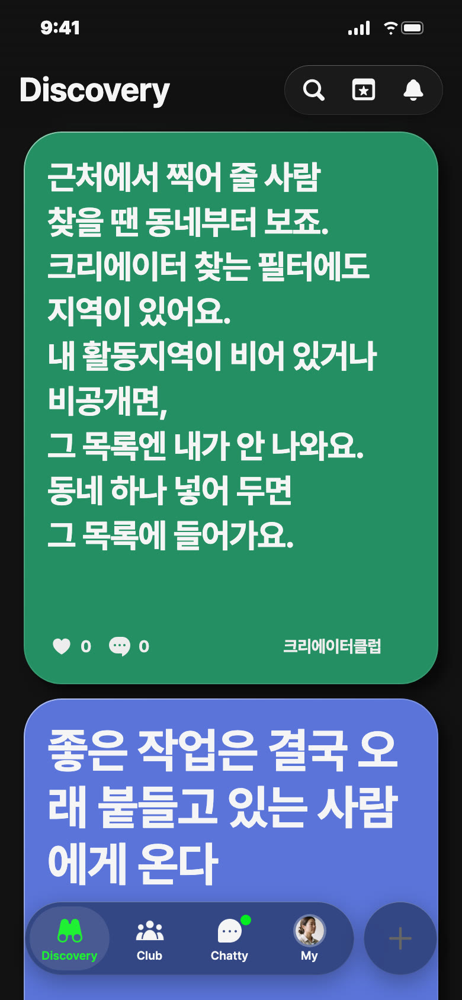
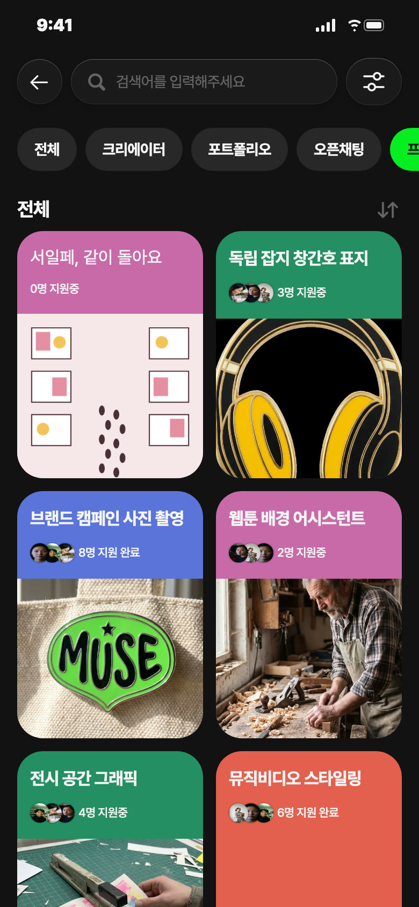
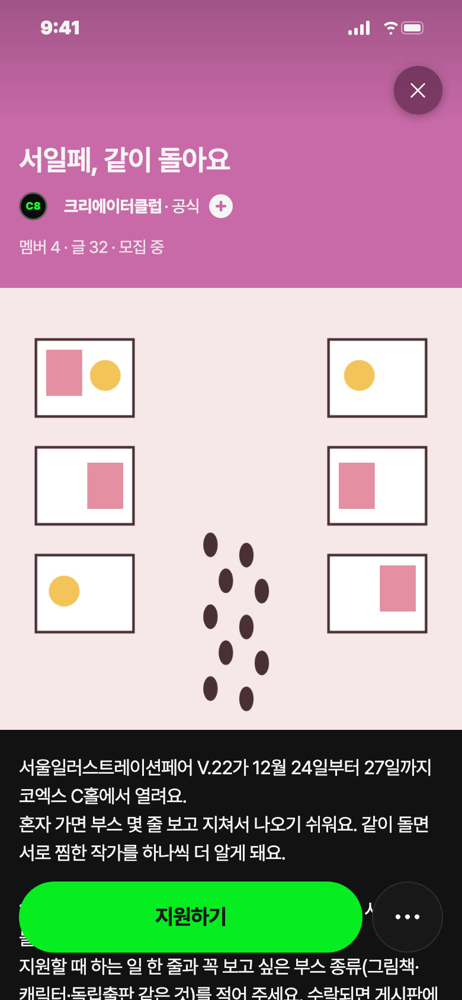
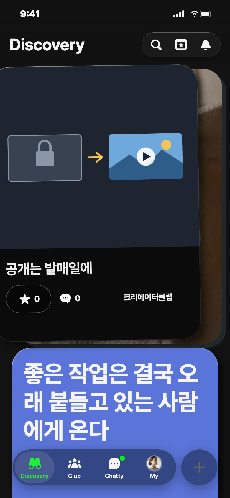
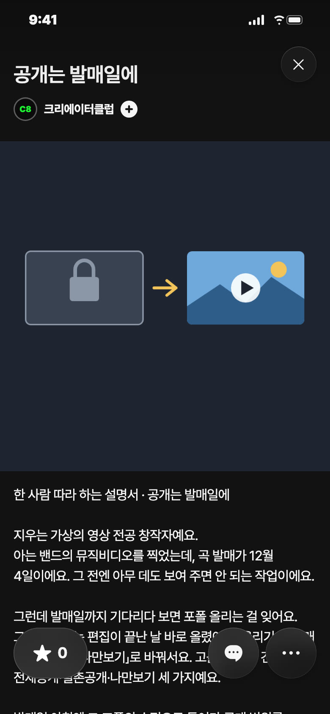

오늘은 쉬어요 · 토요일 기준에 따라 세 안 모두 비축이에요.
날짜·인물·지원 채팅은 제안 또는 가상 예시예요. 실제 모집·게시·멘션은 하지 않았어요. 주변 카드·회원 사진은 디자인 원본의 예시예요.
C8 앱 게시 시안 · 2026. 11. 21. 토요일 · 오늘은 쉬어요

왜 지금: 연말 촬영·행사 일이 많은 때, 동네로 사람을 찾는 장면에서 활동지역 하나를 채우게 함.
보낼 사람: 스냅 찍는 친구에게 「너 지역 비어 있더라」
받고 싶은 댓글: 예시·가상: 부산이랑 김해 넣었어요. 출장 촬영도 해요.
참고: 배경색은 앱이 무작위로 정해요. 시안 색은 예시.
근처에서 찍어 줄 사람 찾을 땐 동네부터 보죠. 크리에이터 찾는 필터에도 지역이 있어요. 내 활동지역이 비어 있거나 비공개면, 그 목록엔 내가 안 나와요. 동네 하나 넣어 두면 그 목록에 들어가요.


왜 지금: 11/8 ★5 「졸업전시 같이 보러 가요」와 같은 결(날짜·장소 있는 실제 행사). 서일페 V.22 12/24~27 코엑스 C홀.
보낼 사람: 그림책 하는 동기에게 「서일페 혼자 가지 말고 이거 해」
받고 싶은 지원 채팅: 예시·가상: 캐릭터 그려요. 그림책 부스 꼭 보고 싶어요.
게시 전: 지원 수락·당일 인솔할 운영자, 26.46.0 출시 확인.
서일페, 같이 돌아요
서일페 V.22를 같이 돌 창작자를 찾아요. 하는 일 한 줄과 꼭 보고 싶은 부스 종류를 적어 주세요. 12/26(토) 오후 2시 코엑스 C홀 입구, 두 시간. 표는 각자 사요.
서울일러스트레이션페어 V.22가 12월 24일부터 27일까지 코엑스 C홀에서 열려요. 혼자 가면 부스 몇 줄 보고 지쳐서 나오기 쉬워요. 같이 돌면 서로 찜한 작가를 하나씩 더 알게 돼요. 12월 26일(토) 오후 2시에 C홀 입구에서 만나 두 시간 같이 돌아요. 표는 각자 사요(성인 15,000원). 지원할 때 하는 일 한 줄과 꼭 보고 싶은 부스 종류(그림책·캐릭터·독립출판 같은 것)를 적어 주세요. 수락되면 게시판에 찜한 작가를 한 줄씩 올리고, 만나는 시간은 일정에 넣어 둘게요. 다녀와서는 그날 산 것 한 장을 게시판에 올려요. 지원은 12월 19일(토)까지예요. 상품은 없어요. 다음 서일페 땐 부스 안쪽에 서 있을 사람도, 이 중에 있을 거예요.


왜 지금: 공개 전 외주 작업은 올릴 때를 놓치기 쉬움 — 공개 범위 기능 하나.
보낼 사람: 뮤비 외주 끝낸 영상과 동기에게 「발매 전에 나만보기로 올려 둬」
받고 싶은 댓글: 예시·가상: 엠바고 걸린 거 이렇게 올려 두면 되겠네요.
확인 범위: iOS 코드 공개 범위 세 가지·수정 때 바꾸기. 실기기 검수는 나나 몫.
공개는 발매일에
한 사람 따라 하는 설명서 · 공개는 발매일에 지우는 가상의 영상 전공 창작자예요. 아는 밴드의 뮤직비디오를 찍었는데, 곡 발매가 12월 4일이에요. 그 전엔 아무 데도 보여 주면 안 되는 작업이에요. 그런데 발매일까지 기다리다 보면 포폴 올리는 걸 잊어요. 그래서 지우는 편집이 끝난 날 바로 올렸어요. 올리기 맨 아래 공개 범위를 「나만보기」로 바꿔서요. 고를 수 있는 건 전체공개·일촌공개·나만보기 세 가지예요. 발매일 아침엔 그 포폴의 수정으로 들어가 공개 범위를 「전체공개」로 바꾸고 「수정하기」를 눌렀어요. 미리 써 둔 제목과 설명은 그대로예요. 밴드·곡·날짜는 모두 지어낸 예시예요. 노래가 나온 날, 지우 포폴에도 그 영상이 같이 올라갔어요.
설명서 사진 원본 두 장
사진 포트폴리오에 아래 두 장을 순서대로 붙여요.


근거
영감: 크리에이터 찾기 필터 「지역 필터 추가」(iOS CreatorFilter), 서버 시험 「작성자 지역 필터」 — 지역을 등록하고 공개한 사람만 걸리고, 지역이 비공개면 빠짐(c8c-api QueryDiscoveryPortfolioAuthorFilterAcceptanceTest).
프로젝트: 서울일러스트레이션페어 V.22, 2026.12.24~12.27 코엑스 Hall C, 10:00~18:00, 성인 15,000원(코엑스 전시 안내, 11/21 확인).
포트폴리오: iOS ContentUploadVisibilityScope(전체공개·일촌공개·나만보기), 수정 때 기존 공개 범위를 불러와 바꿀 수 있음(applyEditDraft), 팀에 올릴 때는 공개 범위를 고를 수 없음.